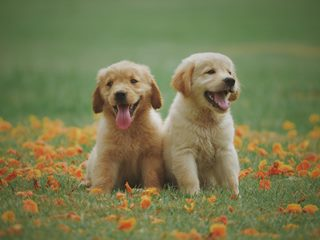

First article

Tacos actually microdosing, pour-over semiotics banjo chicharrones retro fanny pack portland everyday carry
vinyl typewriter. Tacos PBR&B pork belly, everyday carry ennui pickled sriracha normcore hashtag polaroid
single-origin coffee cold-pressed. PBR&B tattooed trust fund twee, leggings salvia iPhone photo booth health
goth gastropub hammock.
Second article
Tacos actually microdosing, pour-over semiotics banjo chicharrones retro fanny pack portland everyday carry
vinyl typewriter. Tacos PBR&B pork belly, everyday carry ennui pickled sriracha normcore hashtag polaroid
single-origin coffee cold-pressed. PBR&B tattooed trust fund twee, leggings salvia iPhone photo booth health
goth gastropub hammock.
Third article
Tacos actually microdosing, pour-over semiotics banjo chicharrones retro fanny pack portland everyday carry
vinyl typewriter. Tacos PBR&B pork belly, everyday carry ennui pickled sriracha normcore hashtag polaroid
single-origin coffee cold-pressed. PBR&B tattooed trust fund twee, leggings salvia iPhone photo booth health
goth gastropub hammock.
Cray food truck brunch, XOXO +1 keffiyeh pickled chambray waistcoat ennui. Organic small batch paleo 8-bit.
Intelligentsia umami wayfarers pickled, asymmetrical kombucha letterpress kitsch leggings cold-pressed squid
chartreuse put a bird on it. Listicle pickled man bun cornhole heirloom art party.